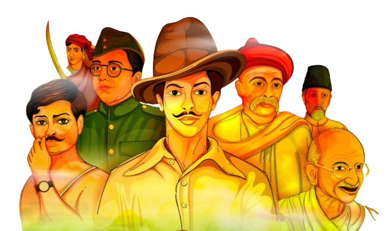
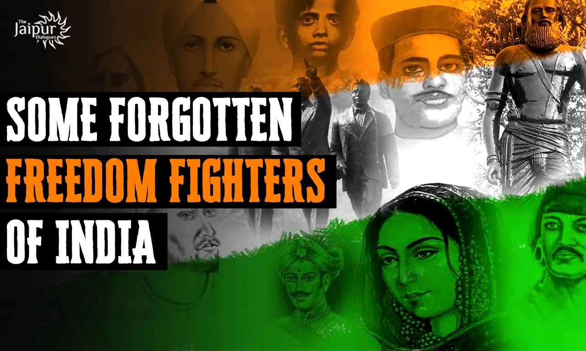

Introduction
The freedom of a country depends on its citizens. Individuals who selflessly sacrifice their lives so that their country and countrymen can be free are identified as freedom fighters. Every country has a few brave hearts who willingly give up their lives for their countrymen. Freedom fighters did not only fight for their country but for everyone who suffered in silence, lost their family and freedom, and even their rights to live for themselves. People of the country look up to the freedom fighters with respect for their patriotism and the love they had for their motherland. These people provide examples by which other citizens aim to live by.
For ordinary people, sacrificing their lives is a big deal but freedom fighters selflessly make this unimaginable sacrifice for their country without thinking of any repercussion. The amount of pain and hardships that they have to endure to achieve their goal cannot be described in mere words. The entire country remains forever indebted to them for their struggles.
Indian independence movement
The Indian Independence Movement was a series of historic events in South Asia with the ultimate aim of ending British colonial rule. It lasted until 1947, when the Indian Independence Act 1947 was passed.
The first nationalistic movement for Indian independence emerged in the Province of Bengal. It later took root in the newly formed Indian National Congress with prominent moderate leaders seeking the right to appear for Indian Civil Service examinations in British India, as well as more economic rights for natives. The first half of the 20th century saw a more radical approach towards self-rule.
Some Forgotten Freedom Fighters
The Indian struggle for freedom was a relentless war waged by millions of people. A barbaric and atrocious colonial regime aimed to destroy the Indian identity. Indians fought the war for freedom from Britishers for a long time, which was bloody, and turbulent, but most importantly, united them. Even today, Indians are inspired by the long-lasting struggle for independence that lasted decades. There is a rich history of Indian warriors who fought for the war of independence, albeit differently but all for the same cause. Umpteen numbers of freedom fighters lost their families, income, and even their lives in the long years of freedom struggle. Sadly, many have faded into history, while some have continued to dominate the limelight, regardless of their achievements.
- Tirot Sing- Tirot Sing was a Khasi chief. In his tribe, he is revered as a hero because he was killed while combating the British when they attempted to take over the Khasi Hills.
- Matangini Hazra- Matangini was an active participant in the Quit India Movement and Non-Cooperation Movement. She was shot three times while marching with the Indian flag during a Quit India movement protest.Despite being shot, she kept shouting “Vande Mataram”. She was lovingly referred to as Gandhi Buri.
- Tara Rani Srivastava- She was a freedom fighter, who was actively involved in the Quit India movement alongside Gandhi. As a couple, she and Phulendu Babu participated in the movement in Saran, Bihar. In 1942, while leading a march to the police station in Siwan, her husband was shot by police. Despite this, she continued the march, only to return later and find her husband dead. Her involvement in the freedom struggle continued until the country gained independence five years later.
- Kanaiyalal Maneklal Munshi- The name Kulpati was famously associated with him. He played a significant role in the Quit India Movement during India’s freedom struggle. The Bharatiya Vidya Bhavan was founded by him. Despite being arrested numerous times, his passion for India’s freedom never waned.
- Garimella Satyanarayana- During the Indian national freedom struggle, Garimella inspired the people of Andhra Pradesh. Many of his poems and songs were intended to motivate the people of Andhra to take an active role in the movement against the British.
